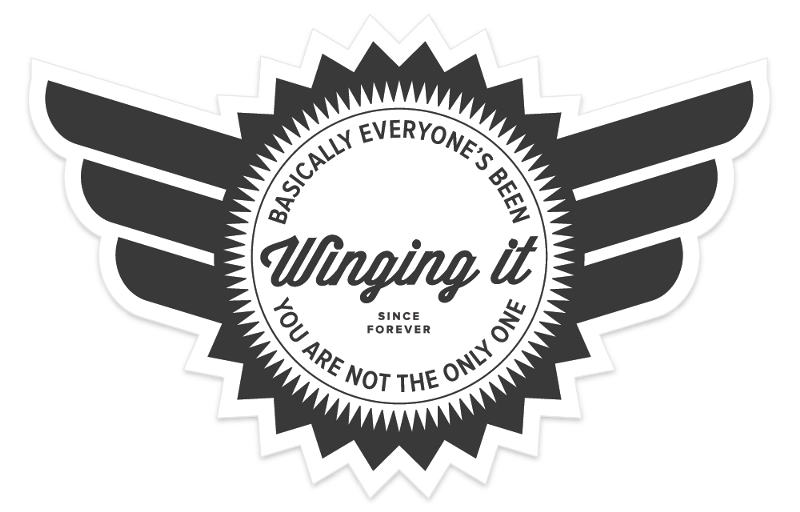
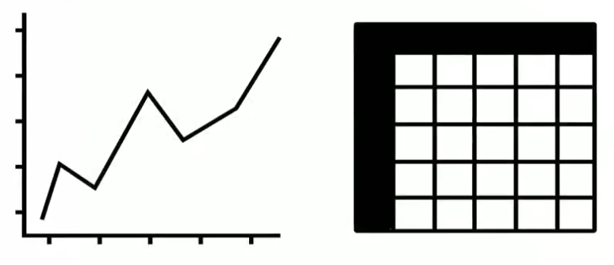

Accessibility and open design
About me
I am not an accessibility expert! I just like making things that everyone can use.
But until 2015, I didn't actually know anything about accessibility.

Source: Everyone’s Been Winging It Since Forever
Accessibility-related things I have made
- Pode is an experimental code editor for newcomers to programming who are visually impaired.
- Accessible color palette builder
- Animated focus ring
Designing for inclusivity

Source: Microsoft's Inclusive Design website
Categories of impairment
- Visual
- Motor
- Hearing
- Cognitive
Temporalities of impairment
- Temporary
- Permanent
- Situational
Source: Google's Web Accessibility course on Udacity
Learn you an assistive technology (AT) for great good
Accessibility ≠ screen readers! But that said, a screen reader is a freely available AT that offers a great perspective on how some people use the technology we design and build.
- Google's Web Accessibility course on Udacity is extremely well-done, and among other things, teaches you how to use a screen reader. (Ignore all the advertising about it being for "advanced developers"—you only need basic HTML and CSS knowledge for most of the class, and the parts that require JavaScript knowledge are easy to skip.)
- NVDA is an excellent open-source screen reader for Microsoft Windows. The NVDA tutorial by WebAIM pairs well with it.
- VoiceOver is an excellent screen-reader built into MacOS and OS X, and it comes with a great built-in tutorial.
- Orca is an open-source screen reader for Linux, although I've never used it myself.
Inclusivity vs. accessibility
Providing a tabular alternative to a line graph that's only visible to screen-reader users may make that graph accessible, but does it make it inclusive?

Source: a11yclub with Heydon Pickering (video), describing inclusivedesignprinciples.org
Allowing for customization
Sometimes it's very hard to deal with every possible impairment.
For instance, a high contrast ratio can make content more readable for
most folks with visual impairments, but for individuals with
Irlen syndrome
it can do the opposite.
In this case, try to use open standards that allow users to customize your
design via third-party tooling.

Source: How users change colours on websites from the gov.uk accessibility blog
Other resources
- Accessibility NYC Meetup and Accessibility NYC YouTube videos
- Alexa / Snips on Sara Hendren's blog